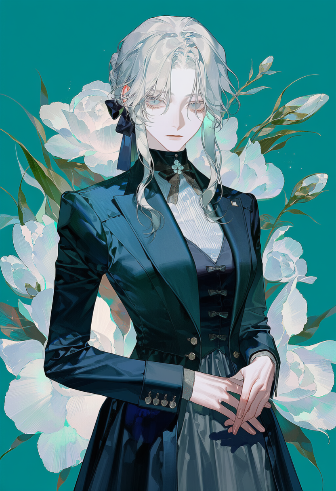
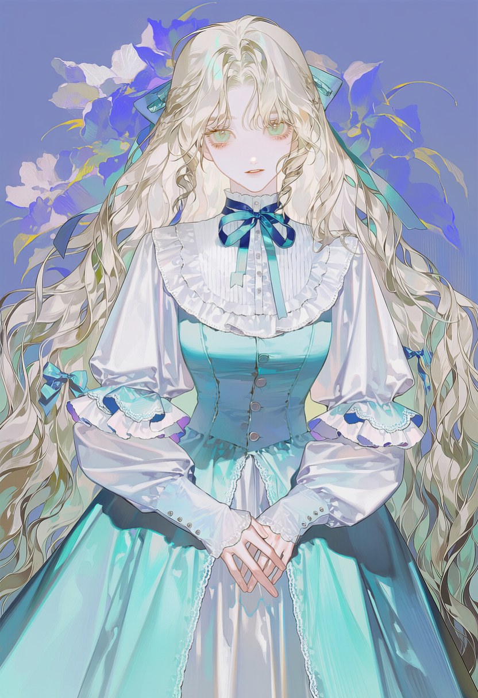
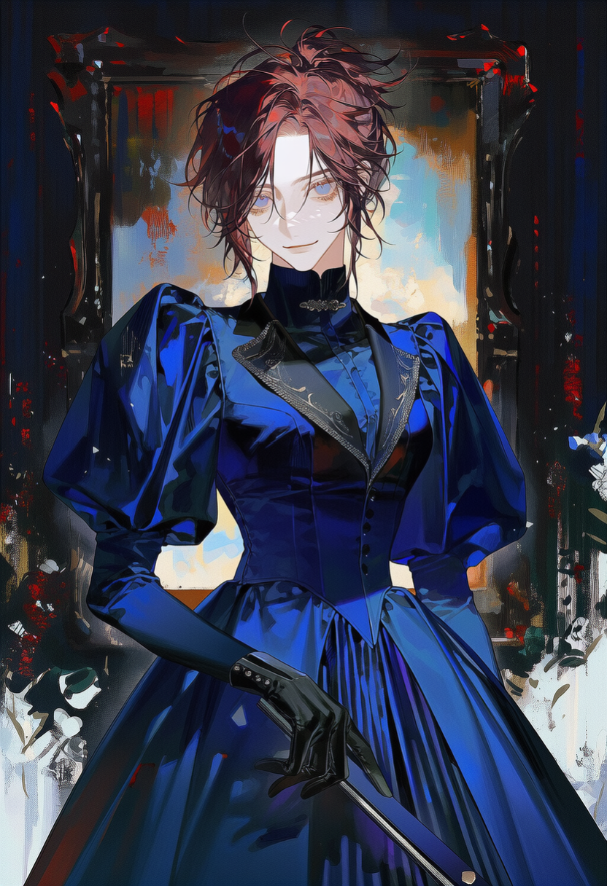

South Devon · Torbay Spring 1888 — 1889 · The English Riviera
헤런스클리프는 잉글랜드 남서부 해안, 붉은 사암 절벽 아래 자리한 미혼 숙녀를 위한 사설 휴양의 집이다. 온화한 요양 벨트의 최고급 리조트답게 아름답고 안락하다.
다만 이곳에 머무는 이들은 저마다, 조용히 지워진 사연을 안고 왔다. 그리고 지금, 가장 늦게 도착한 사람이 문을 들어선다.
세 사람이 같은 바다를 마주하고 있다. 다가서는 방식만, 저마다 다르다.
Fol. № I
The East Room
Cordelia Sedgwick
코델리아 세드윅
고른 저음, 각이 맞는 서류
Fol. № II
The South Room
Euphemia Barlow
유페미아 '에피' 바로우
말 대신, 손과 공책으로
Fol. № III
The West Room
Frances Hartley
프랜시스 '프랭크' 하틀리
날카로운 눈, 더 날카로운 혀
헤런스클리프는 표면상 미혼 숙녀를 위한 사설 휴양의 집이다. 파혼·스캔들·결혼 시장에서 밀려나 가문의 체면에 부담이 된 딸들을, 우아하게 거리를 두어 머물게 하는 곳이기도 하다.
겉은 최고급 요양지라 아름답고 안락하나, 아무도 병자라 이름 붙이지 않는 한 이곳은 병원이 아니라 숙녀들의 휴양지로 남는다. 하루는 해수욕과 해안 산책으로 열려, 응접실의 서한과 오후의 독서·자수·화실 작업으로 이어지고, 저녁 다과와 낭독으로 닫힌다. 아래는 그 하루가 지나는 자리들 — 눌러 본관·정원과 해안·거처로 나누어 볼 수 있다.
응접실 The Drawing Room
집의 중심. 오전엔 서한을 쓰고 저녁엔 다과와 낭독이 오른다. 주 1회 매트론이 주재하는 응접이 여기서 열려, 입소자들이 가장 자주 마주치는 자리다.
음악실 · 도서실 Music Room & Library
피아노와 장서가 놓인 조용한 두 방. 낮의 독서와 저녁의 낭독, 이따금의 연주가 이어진다. 말수 적은 오후를 보내기 좋은 구석.
서한실 The Correspondence Room
편지를 쓰고 받는 방. 바깥과 이어지는 유일한 통로이자, 오간 편지와 끊긴 소식이 함께 머무는 자리.
화실 The Studio
서쪽 방을 겸한 작업 공간. 이젤과 마르지 않은 캔버스가 놓여, 모델을 세우고 응시하는 낮의 시간이 이곳에서 흐른다.
진료실 The Consulting Room
월례 방문의의 임상 회진이 열리는 방. 격식과 예의가 흐르는, 이 집에서 가장 서늘한 공기가 도는 자리.
온실 · 오랑제리 The Orangery
유리 지붕 아래 야자수와 화분이 늘어선 온실. 오후 산책과 눌러 말릴 들꽃을 고르는 자리로, 볕이 가장 오래 머문다.
절벽 산책로 The Cliff Walk
붉은 사암 절벽을 따라 난 해안 산책로. 이른 아침 짠 해무가 낮게 깔리고, 길어진 저녁볕이 바다로 떨어진다.
조약돌 해변 Pebble Cove
절벽 아래 작은 해변. 아침 해수욕과 여름의 해수욕 천막이 서는 곳. 규칙적인 파도 소리가 하루의 배경음이 된다.
동쪽 방 The East Room
바다가 보이는 코델리아의 방. 책상 위 서류는 언제나 각이 맞고, 창 너머로 밤바다의 파도 소리가 들어온다.
남쪽 방 The South Room
볕 드는 에피의 방, 문은 늘 조금 열려 있다. 창가엔 눌러 말린 꽃과 낱장 공책, 벽엔 개와 말을 그린 서툰 스케치.
서쪽 방 The West Room
북향 채광을 이유로 배정된 프랭크의 방 겸 화실. 이젤과 캔버스가 벽을 두르고, 낮의 빛이 그림 위로 옮겨 앉는다.
Matron · 원장
Honoria Payne 오노리아 페인 부인
이 집을 진심으로 안식처라 믿는 구세대. 입소자들의 애착을 낭만적 우정의 미덕으로 너그러이 대한다.
Visiting Physician · 방문 임상의
Dr. Edmund Rhodes 에드먼드 로즈 의사
월례 회진을 도는 젊은 임상의. 단정한 예의 아래, 관찰과 기록을 좋아하는 눈이 있다.
Nurse & Interpreter · 간호 · 수화 통역
Meredith Poole 메러디스 폴
에피의 수화를 유창히 읽는 유일한 직원. 규정과 온정 사이에서 조용히 눈감아 주는 완충지대.
헤런스클리프의 하루는 정해진 리듬을 따라 바다에서 열려 응접실에서 닫힌다. 그 하루가 봄에서 겨울로 접히는 사이, 1888년의 이야기가 이듬해로 넘어간다.
이른 아침
해수욕 · 해안 산책
조약돌 해변과 절벽 산책로에서 하루를 연다.
오전
응접실 · 서한
응접실에 모여 편지를 쓰고 소식을 나눈다.
오후
독서 · 자수 · 화실 · 온실
저마다의 방과 온실에서 조용한 낮을 보낸다.
저녁
다과 · 낭독
응접실 다과와 낭독으로 하루를 닫는다.
밤
각자의 방
창 너머 파도 소리와 가스등 아래의 정적.
Movement I
봄
1888 · Spring
붉은 사암 절벽 아래 야자수. 젖은 산책로와 길어진 저녁볕. 이야기가 처음 문을 여는 계절.
Movement II
여름
1888 · Summer
만조의 짠 공기. 해변의 해수욕 천막과 응접실 창으로 스미는 한낮의 열기.
Movement III
가을
1888 · Autumn
해무에 잠긴 아침. 낙엽 밟는 정원과, 점점 짧아지는 볕.
Movement IV
겨울
1888 — 1889 · Winter
바다에서 불어오는 칼바람. 가스등 아래 응접실의 온기로 해를 넘긴다.

The East Room · 세드윅 가 장녀
코델리아 세드윅
Dossier

The South Room · 바로우 가 막내
유페미아 '에피' 바로우
Dossier

The West Room · 하틀리 가 차녀
프랜시스 '프랭크' 하틀리
Dossier